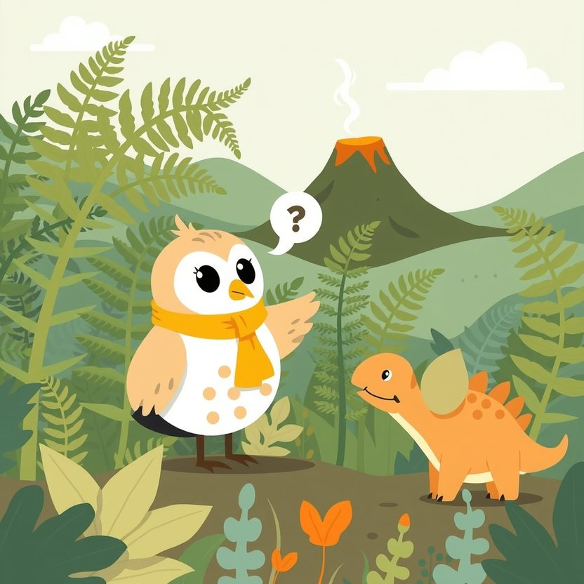

Titistoire › Les Étoiles (3-6 ans)
Plume et les mille pourquoi
Une histoire de Plume la chouette pour parler de : poser des questions.

▶ Écouter et regarder l'histoire
Gratuit, sans inscription : la voix lit, le texte suit mot à mot, les images tournent comme dans un album.
Le texte de l'histoire
Dans la vallée des Fougères, Plume a une collection. Pas de cailloux, pas de coquillages. Une collection de questions, qu'elle déniche partout.
« Pourquoi les fougères se déroulent ? Pourquoi Tric a trois cornes et pas quatre ? Pourquoi le volcan ronfle ? Et pourquoi on dit pourquoi ? » Tric en reste tout ahuri.
Elle en pose cent par jour. Au petit déjeuner, à la sieste, et même quand Tric, pelotonné sous sa fougère, voudrait bien dormir.
« Assez avec tes pourquoi ! gémit Tric en se bouchant les oreilles. Tu me donnes mal aux cornes. » « Les choses sont comme elles sont, grogne Grondar le tyrannosaure. Un point, c'est tout. »
« On a toujours fait comme ça », répondent les grands en haussant les épaules. Ça, c'est la réponse que Plume aime le moins.
Alors un jour, Plume décide d'arrêter. Elle plie ses questions, les range tout au fond de sa tête, s'enroule dans ses ailes et ferme son bec. Clac.
La vallée est bien paisible, sans les pourquoi. Tric fait la sieste. Grondar aussi. Mais Plume, elle, a la tête qui la démange, comme le nez quand on se retient d'éternuer.
C'est qu'elle remarque de drôles de choses. Ce matin, tous les oiseaux ont filé vers la mer. Pourquoi ? Les grenouilles quittent la mare à la queue leu leu. Pourquoi ?
Et la rivière ! Plume y trempe le bout d'une aile : l'eau est tiède comme un bain. Pourquoi, pourquoi, pourquoi ? Les questions cognent dans sa tête. Toc, toc, toc.
Plume n'y tient plus. D'un coup d'aile, elle rejoint Mamie Dipla, la plus vieille et la plus sage de la vallée. « Mamie… je sais qu'il ne faut pas… mais j'ai trois pourquoi qui me grattent », avoue-t-elle.
Mamie Dipla abaisse son long, long cou jusqu'au rocher. « Hé hé. Donne-les-moi, ma puce. Voilà bien longtemps qu'on ne m'a pas posé une vraie question », glousse-t-elle.
Plume raconte tout, à grands battements d'ailes. Les oiseaux. Les grenouilles. L'eau tiède. Mamie Dipla écoute sans l'interrompre. Et plus elle écoute, plus ses lunettes glissent au bout de son nez.
« L'eau tiède… Les oiseaux… marmonne la vieille dame. Ma grand-mère me racontait ça, quand j'étais haute comme une fougère. » Lentement, elle lève la tête vers la montagne.
Le Grand Ronfleur, le vieux volcan, ne ronfle plus. Il fume. Un panache de fumée noire, tout droit dans le ciel. « Il va se réveiller, ma puce, murmure Mamie Dipla. Ce soir, peut-être. »
Elle frôle Plume du bout du museau. « Tout le monde a vu les oiseaux partir. Mais personne n'a demandé pourquoi. Personne, sauf toi. »
Il faut prévenir toute la vallée ! Mamie Dipla est bien trop lente. Alors c'est Plume qui s'élance, de fougère en fougère, jusque sur la tête de Tric. « Réveillez-vous ! Le volcan ! Il faut partir ! »
« Encore toi ? bâille Tric à s'en décrocher la mâchoire. Et pourquoi on partirait ? » Plume trépigne entre ses cornes. « Ah ! Tu vois que c'est une bonne question ! Touche la rivière. »
Tric trempe une patte. Ouille, c'est chaud ! Il regarde la fumée, il regarde Plume, et ses yeux s'arrondissent. « GRONDAR ! Debout ! Plume avait raison ! »
Toute la vallée se met en marche vers la colline Bleue. Grondar porte les œufs tout contre lui, délicatement, sans en fêler un seul. Mamie Dipla a hissé les petits sur son dos. Et tout devant, Plume ouvre le chemin.
Ils atteignent le sommet juste quand le soleil se couche. Et là… BROUM ! Le Grand Ronfleur crache une gerbe d'étincelles. La lave coule, rouge et lente, là où ils dormaient encore ce matin.
Plus personne ne parle. C'est beau et terrible à la fois. Grondar pose les œufs dans l'herbe. Tous sont là, bien à l'abri. Pas une écaille ne manque.
Dans le noir, une grosse voix se racle la gorge. C'est Grondar, tout intimidé. « Dis, Plume… Pourquoi ça fait de la lumière, la lave ? »
« Et pourquoi la fumée monte ? » enchaîne Tric. « Et pourquoi les étoiles ne tombent pas ? » piaille un tout-petit, le nez en l'air. Plume écarquille des yeux ravis.
« Je n'en sais rien ! s'exclame-t-elle, les ailes grandes ouvertes. Mais on va chercher ! » Et cette nuit-là, sur la colline, personne ne ferme l'œil. Il y a bien trop de pourquoi à se partager.